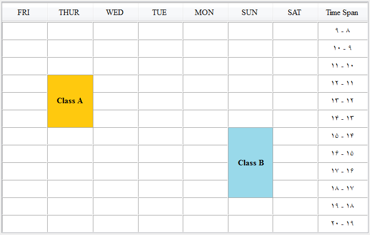

* Fragment classes that are more than
two units and convert them into two unit or one unit
classes.
This feature only once can be done. Because when you run, the
entire classes that are more than two units breaks down, and
this action is not reversible. For
example:
Before click on  button,
you have the following classes are:
button,
you have the following classes are:

* Class A (3 Unit)
* Class B (4 Unit)
After Fragment these classes, you have the following classes
are now:
* Class A (3 Unit) ==> Class A_1 (2 Unit) +
Class A_2 (1 Unit)
* Class B (4 Unit) ==> Class B_1 (2 Unit) +
Class B_2 (2 Unit)